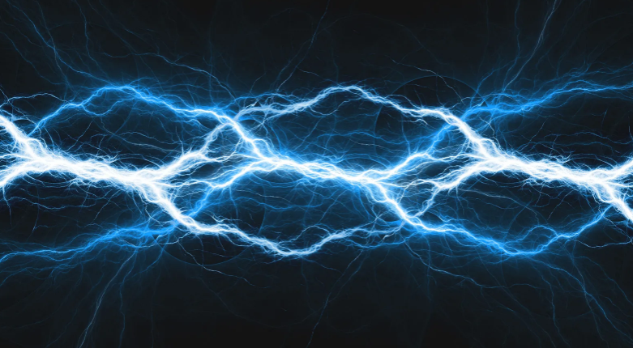

Fuerzas electrostáticas
La electrostática es el estudio de cómo las cargas en reposo interactúan entre sí. Las leyes electrostáticas nos permiten entender estas fuerzas misteriosas que actúan a distancia, desde la famosa ley de Coulomb, que calcula la fuerza entre dos cargas, hasta cómo se distribuyen las cargas en los objetos.
Gracias a estas leyes, podemos explicar fenómenos cotidianos como por qué tu cabello se eriza al quitarte un suéter o cómo funcionan los filtros de aire y las impresoras láser. En pocas palabras, las leyes electrostáticas son la llave que nos permite ver y predecir el comportamiento de la electricidad
que está quieta, pero siempre lista para moverse.
Por tanto, dos cargas del mismo signo generan una fuerza positiva. Es decir, si hay dos cargas negativas (-) o positivas (+), la fuerza resultante es positiva. En cambio, dos cargas de signos opuestos generan una fuerza negativa.
A su vez, dos cargas con el mismo signo se repelen (+ + / - -), pero dos cargas con signos diferentes se atraen (+ - / - +).

Ejemplo
Si se frota una cinta de teflón con un guante, el guante queda con carga positiva y la cinta con carga negativa. Por eso, al acercarse, se atraen. Ahora bien, si frotamos un globo inflado con nuestro cabello, el globo se cargará con energía negativa. Al acercarlo a la cinta de teflón,
ambos se repelen porque tienen el mismo tipo de carga.
Asimismo, esta fuerza depende de la carga eléctrica y de la distancia que exista entre ellas. Es un principio fundamental de la electrostática, así como una ley aplicable en las cargas en reposo en un sistema de referencia.
Cabe mencionar que para las distancias pequeñas las fuerzas de las cargas eléctricas aumentan. Sin embargo, en distancias grandes las fuerzas de las cargas eléctricas disminuyen, es decir, se reduce a medida que las cargas se alejan entre sí.
Importancia
Las fuerzas electrostáticas son cruciales para la tecnología moderna, desde la electrónica y las telecomunicaciones hasta la salud y la industria automotriz. Su importancia radica en que permiten el funcionamiento de innumerables dispositivos (como impresoras láser y filtros de aire) y son fundamentales para procesos como la pintura de automóviles o la manipulación precisa de cargas eléctricas en terapias médicas.
- Electrónica: Las fuerzas electrostáticas son esenciales en el diseño y funcionamiento de componentes como condensadores y semiconductores. También se utilizan para proteger estos componentes de daños causados por descargas electrostáticas (ESD).
- Medicina: Se emplean en terapias para estimular músculos y en electrocirugía. Además, es vital controlar la electricidad estática en los hospitales para evitar chispas que puedan causar incendios.
- Industria automotriz: La pintura de los automóviles utiliza fuerzas electrostáticas para asegurar una capa de pintura uniforme y eficiente en toda la superficie del vehículo.